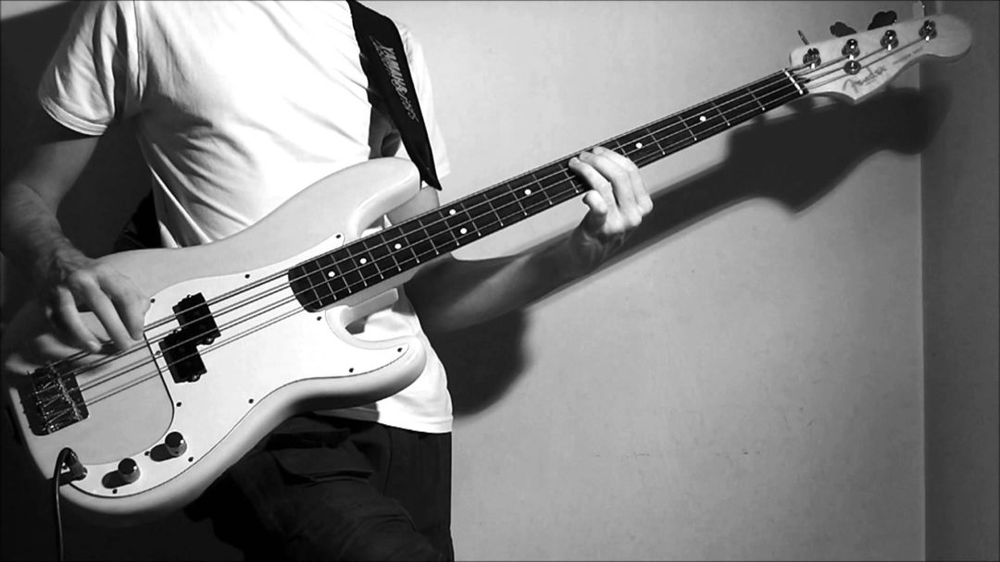

Tips and Tricks
Learn how to master your instrument with these few awesome techniques. Practice and get good !
Perfection
doesn't come fast nor easy. Persistence is your friend.

 LISTEN TO THE BASS
LISTEN TO THE BASS
Learn how to master your instrument with these few awesome techniques. Practice and get good !
Perfection
doesn't come fast nor easy. Persistence is your friend.
Slapping
Hammer-ons and pull-offs
Chords
Harmonics
If you do not overcome your tendency to give up easily, your life leads to nothing.
The time to start was yesterday, but today is still okay.
Let's get started !